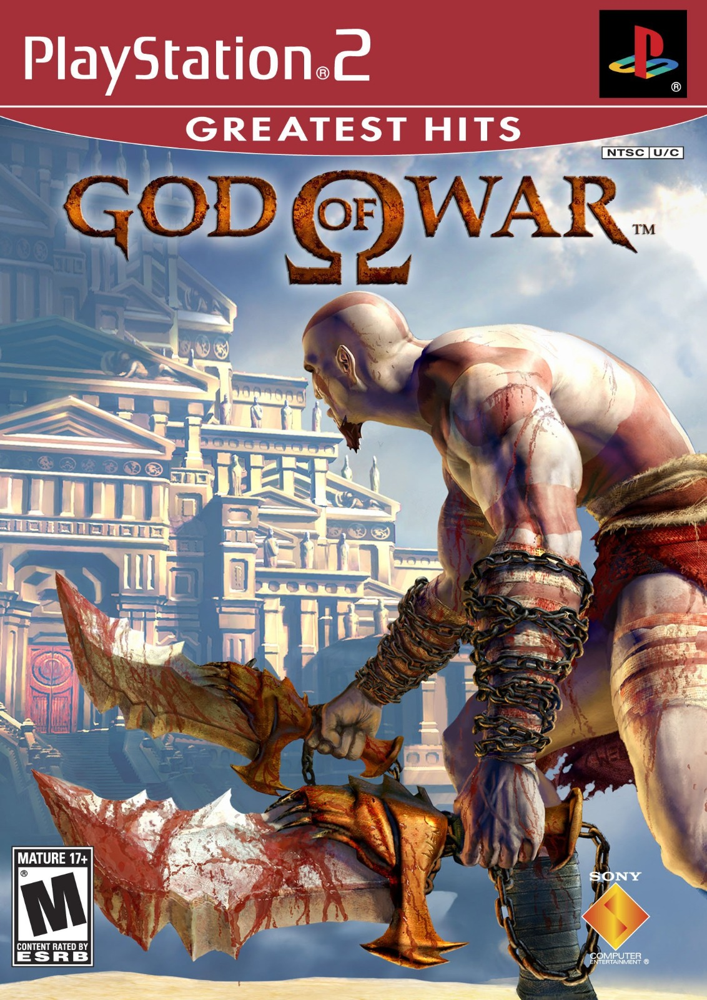

Sinopse
God of War é um jogo de ação baseado na mitologia grega, no qual o jogador assume o controle de Kratos, um guerreiro espartano atormentado pelo seu passado. Em busca de redenção, ele embarca em uma jornada para derrotar Ares, o Deus da Guerra, com a ajuda dos deuses do Olimpo.
Com combate visceral, puzzles inteligentes e uma narrativa cinematográfica, o jogo se tornou um marco na história do PlayStation 2 e deu início a uma das franquias mais aclamadas da indústria dos games.
Características Principais
- Combate intenso com as icônicas Lâminas do Caos
- Puzzles e desafios inspirados na mitologia grega
- Inimigos e chefes lendários, como a Hidra e Minotauros
- Gráficos impressionantes para a geração PS2
- Trilha sonora épica e ambientação cinematográfica
- História profunda de vingança e redenção
Imagens Adicionais